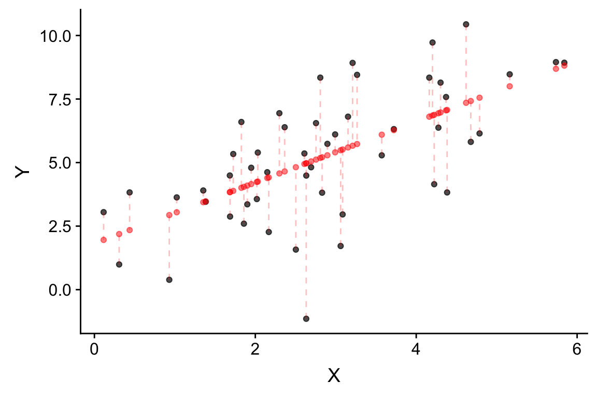
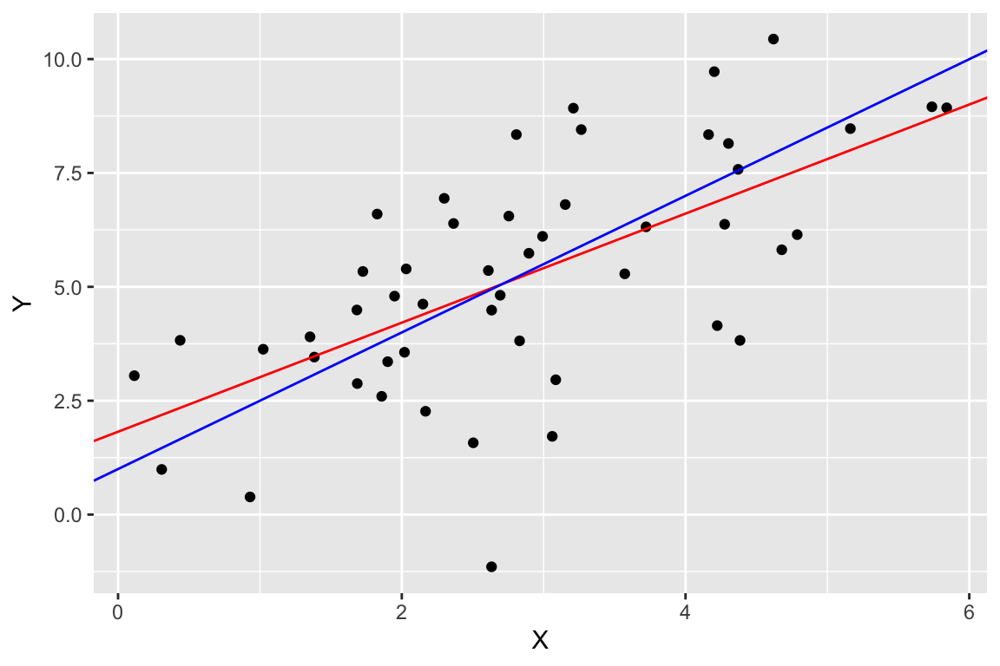

Chapter 12 Principal Components Analysis
12.1 Libraries
library(tidyverse)
library(broom)
library(GGally) # provides ggpairs
library(cowplot)12.2 Matrices as linear transformations
In lecture we introduced the notion that pre-multiplying a vector, \(x\), by a matrix \(\mathbf{A}\) represents a linear transformation of \(x\). Let’s explore that visually for 2D vectors.
For illustration let’s generate a 2D vector representing the coordinates of points on the sine function.
sin.xy <- data_frame(x = seq(0,2*pi, length.out = 50) - pi,
y = sin(x))
ggplot(sin.xy, aes(x = x, y= y)) + geom_point()
Let’s start with some of the transformations we discussed in lecture. First we look at reflection in the x-axis:
A <- matrix(c(1, 0, 0, -1), byrow=TRUE, nrow=2)
Ax <- A %*% t(sin.xy)
Ax.df <- as.data.frame(t(Ax)) %>% rename(x = V1, y = V2)
ggplot(Ax.df, aes(x = x, y= y)) + geom_point()
Now shear:
A <- matrix(c(1, 1.5, 0, 1), byrow=TRUE, nrow=2)
Ax <- A %*% t(sin.xy)
Ax.df <- as.data.frame(t(Ax)) %>% rename(x = V1, y = V2)
ggplot(Ax.df, aes(x = x, y= y)) + geom_point()
And finally rotation:
A <- matrix(c(cos(pi/2), -sin(pi/2), sin(pi/2), cos(pi/2)), byrow=TRUE, nrow=2)
Ax <- A %*% t(sin.xy)
Ax.df <- as.data.frame(t(Ax)) %>% rename(x = V1, y = V2)
ggplot(Ax.df, aes(x = x, y= y)) + geom_point()
12.3 Eigenanalysis in R
As we discussed in lecture, the eigenvectors of a square matrix, \(\mathbf{A}\), point in the directions that are unchanged by the transformation specified by \(\mathbf{A}\). The following relationships relate \(\mathbf{A}\) to it’s eigenvectors and eigenvalues:
\[\mathbf{V}^{-1}\mathbf{A}\mathbf{V} = \mathbf{D} \]
\[\mathbf{A} = \mathbf{V}\mathbf{D}\mathbf{V}^{-1}\]
where \(\mathbf{V}\) is a matrix where the columns represent the eigenvectors, and \(\mathbf{D}\) is a diagonal matrix of eigenvalues.
The eigen() function computes the eigenvalues and eigenvectors of a square matrix.
A <- matrix(c(2,1,2,3),nrow=2)
A
[,1] [,2]
[1,] 2 2
[2,] 1 3
eigen.A <- eigen(A)
eigen.A
eigen() decomposition
$values
[1] 4 1
$vectors
[,1] [,2]
[1,] -0.7071068 -0.8944272
[2,] -0.7071068 0.4472136
V <- eigen.A$vectors
D <- diag(eigen.A$values) # diagonal matrix of eigenvalues
Vinv <- solve(V)
V %*% D %*% Vinv # reconstruct our original matrix (see lecture slides)
[,1] [,2]
[1,] 2 2
[2,] 1 3
Vinv %*% A %*% V
[,1] [,2]
[1,] 4.000000e+00 0
[2,] 2.220446e-16 1
all.equal(Vinv %*% A %*% V, D) # test 'near equality'
[1] TRUE
V[,1] %*% V[,2] # note that the eigenvectors are NOT orthogonal. Why?
[,1]
[1,] 0.3162278
B <- matrix(c(2,2,2,3),nrow=2) # define another tranformation
B
[,1] [,2]
[1,] 2 2
[2,] 2 3
eigen.B <- eigen(B)
eigen.B$values
[1] 4.5615528 0.4384472
eigen.B$vectors
[,1] [,2]
[1,] 0.6154122 -0.7882054
[2,] 0.7882054 0.6154122
Vb <- eigen.B$vectors
Vb[,1] %*% Vb[,2] # these eigenvectors ARE orthogonal.
[,1]
[1,] 0Since \(\mathbf{A}\) and \(\mathbf{B}\) represent 2D transformations we can visualize the effect of these transformations using points in the plane. We’ll show how they distort a set of points that make up a square.
eigenvec.A.slope1 = eigen.A$vectors[1,1]/eigen.A$vectors[2,1]
eigenvec.A.slope2 = eigen.A$vectors[2,1]/eigen.A$vectors[2,2]
eigenvec.B.slope1 = eigen.B$vectors[1,1]/eigen.B$vectors[2,1]
eigenvec.B.slope2 = eigen.B$vectors[2,1]/eigen.B$vectors[2,2]
Ax <- A %*% t(sin.xy)
Bx <- B %*% t(sin.xy)
Ax.df <- as.data.frame(t(Ax)) %>% rename(x = V1, y = V2)
Bx.df <- as.data.frame(t(Bx)) %>% rename(x = V1, y = V2)
plot.transform.AB <-
ggplot(sin.xy, aes(x = x, y = y)) +
geom_point(alpha=0.5) +
geom_point(data = Ax.df, color='red') +
geom_point(data = Bx.df, color='blue') +
coord_fixed()
plot.transform.ABBy plotting the eigenvectors we can make a similar figure to show the directions that are unaffected by the transformation represented by the matrix \(\mathbf{A}\):
ggplot(sin.xy, aes(x = x, y = y)) +
geom_point(alpha=0.5) +
geom_point(data = Ax.df, color='red') +
geom_abline(aes(slope = eigenvec.A.slope1,intercept=0),
color='red',linetype='dashed') +
geom_abline(aes(slope = eigenvec.A.slope2,intercept=0),
color='red',linetype='dashed') +
coord_fixed()
12.4 Principal Components Analysis in R
There are two functions in R for carrying out PCA - princomp() and prcomp(). The princomp() function uses the eigen() function to carry out the analysis on the covariance matrix or correlation matrix, while carries out an equivalent analysis, starting from a data matrix, using a technique called singular value decomposition (SVD). The SVD routine has greater numerical accuracy, so the prcomp() function should generally be preferred. The princomp() function is useful when you don’t have access to the original data, but you do have a covariance or correlation matrix (a frequent situation when re-analyzing data from the literature). We’ll concentrate on using the prcomp() function.
12.4.1 Bioenv dataset
To demonstrate PCA we’ll use a dataset called `bioenv.txt’ (see class wiki), obtained from a book called “Biplots in Practice” (M. Greenacre, 2010). Here is Greenacre’s description of the dataset:
The context is in marine biology and the data consist of two sets of variables observed at the same locations on the sea-bed: the first is a set of biological variables, the counts of five groups of species, and the second is a set of four environmental variables. The data set, called “bioenv”, is shown in Exhibit 2.1. The species groups are abbreviated as “a” to “e”. The environmental variables are “pollution”, a composite index of pollution combining measurements of heavy metal concentrations and hydrocarbons; depth, the depth in metres of the sea-bed where the sample was taken; “temperature”, the temperature of the water at the sampling point; and “sediment”, a classification of the substrate of the sample into one of three sediment categories.
We’ll start by reading the bioenv.txt data set from the Github repository:
bioenv <- read_tsv('https://github.com/Bio723-class/example-datasets/raw/master/bioenv.txt')
Parsed with column specification:
cols(
X1 = col_character(),
a = col_integer(),
b = col_integer(),
c = col_integer(),
d = col_integer(),
e = col_integer(),
Pollution = col_double(),
Depth = col_integer(),
Temperature = col_double(),
Sediment = col_character()
)
names(bioenv)
[1] "X1" "a" "b" "c" "d"
[6] "e" "Pollution" "Depth" "Temperature" "Sediment" Notice that the first column got assigned the generic name X1. This is because there is a missing column header in the bioenv.txt file. This first column corresponds to the sampling sites. Before we move on let’s give this column a more meaningful name:
bioenv <-
bioenv %>% rename(Site = X1)
names(bioenv)
[1] "Site" "a" "b" "c" "d"
[6] "e" "Pollution" "Depth" "Temperature" "Sediment" The columns labeled a to e contain the counts of the five species at each site, while the remaining columns give additional information about the physical properties of each sampling site. For our purposes today we’ll confine our attention to the abundance data.
abundance <-
bioenv %>%
select(Site, a, b, c, d, e)
head(abundance)
# A tibble: 6 x 6
Site a b c d e
<chr> <int> <int> <int> <int> <int>
1 s1 0 2 9 14 2
2 s2 26 4 13 11 0
3 s3 0 10 9 8 0
4 s4 0 0 15 3 0
5 s5 13 5 3 10 7
6 s6 31 21 13 16 5The data is currently in a “wide” format. For the purposes of plotting it will be more convenient to generate a “long” version of the data using functions from the tidyr library (see the Data Wrangling chapter).
long.abundance <-
abundance %>%
tidyr::gather(Species, Count, -Site)
head(long.abundance)
# A tibble: 6 x 3
Site Species Count
<chr> <chr> <int>
1 s1 a 0
2 s2 a 26
3 s3 a 0
4 s4 a 0
5 s5 a 13
6 s6 a 31ggplot(long.abundance, aes(x = Species, y = Count)) +
geom_boxplot() +
labs(x = "Species", y = "Count", title="Distribution of\nSpecies Counts per Site")
From the boxplot it looks like the counts for species `e’ are smaller on average, and less variable. The mean and variance functions confirm that.
long.abundance %>%
group_by(Species) %>%
summarize(mean(Count), var(Count))
# A tibble: 5 x 3
Species `mean(Count)` `var(Count)`
<chr> <dbl> <dbl>
1 a 13.5 158.
2 b 8.73 83.4
3 c 8.40 73.6
4 d 10.9 44.4
5 e 2.97 15.7A correlation matrix suggests weak to moderate associations between the variables:
abundance.only <-
abundance %>%
select(-Site) # drop the Site column
cor(abundance.only)
a b c d e
a 1.0000000 0.67339954 -0.23992888 0.358192050 0.273522301
b 0.6733995 1.00000000 -0.08041947 0.501834036 0.036914702
c -0.2399289 -0.08041947 1.00000000 0.081504483 -0.343540453
d 0.3581921 0.50183404 0.08150448 1.000000000 -0.004048517
e 0.2735223 0.03691470 -0.34354045 -0.004048517 1.000000000However a scatterplot matrix generated by the GGally::ggapirs() function suggests that many of the relationships have a strong non-linear element.
ggpairs(abundance.only)
12.4.2 PCA of the Bioenv dataset
Linearity is not a requirement for PCA, as it’s simply a rigid rotation of the original data. So we’ll continue with our analysis after taking a moment to read the help on the prcomp() function that is used to carry-out PCA in R.
abundance.pca <- prcomp(abundance.only, center=TRUE, retx=TRUE)
# center=TRUE mean centers the data
# retx=TRUE returns the PC scores
# if you want to do PCA on the correlation matrix set scale.=TRUE
# -- notice the period after scale!
summary(abundance.pca)
Importance of components:
PC1 PC2 PC3 PC4 PC5
Standard deviation 14.8653 8.8149 6.2193 5.03477 3.48231
Proportion of Variance 0.5895 0.2073 0.1032 0.06763 0.03235
Cumulative Proportion 0.5895 0.7968 0.9000 0.96765 1.00000We see that approximately 59% of the variance in the data is capture by the first PC, and approximately 90% by the first three PCs.
Let’s compare the values return by PCA to what we would get if we carried out eigenanalysis of the covariance matrix that corresponds to our data.
First the list object return by prcomp():
abundance.pca
Standard deviations (1, .., p=5):
[1] 14.865306 8.814912 6.219250 5.034774 3.482308
Rotation (n x k) = (5 x 5):
PC1 PC2 PC3 PC4 PC5
a 0.81064462 0.07052882 -0.53108427 0.18442140 -0.14771336
b 0.51264394 -0.27799671 0.47711910 -0.63418946 0.17342177
c -0.16235135 -0.88665551 -0.40897655 -0.01149647 0.14173943
d 0.22207108 -0.31665237 0.56250980 0.72941223 -0.04422938
e 0.06616623 0.17696554 -0.08141111 0.17781482 0.96231977And now the corresponding values returned by eigenanaysis of the covariance matrix generated from the abundance data:
eig.abundance <- eigen(cov(abundance.only))
eig.abundance$vectors # compare to rotation matrix of PCA
[,1] [,2] [,3] [,4] [,5]
[1,] 0.81064462 -0.07052882 0.53108427 0.18442140 -0.14771336
[2,] 0.51264394 0.27799671 -0.47711910 -0.63418946 0.17342177
[3,] -0.16235135 0.88665551 0.40897655 -0.01149647 0.14173943
[4,] 0.22207108 0.31665237 -0.56250980 0.72941223 -0.04422938
[5,] 0.06616623 -0.17696554 0.08141111 0.17781482 0.96231977
sqrt(eig.abundance$values) # compare to sdev of PCA
[1] 14.865306 8.814912 6.219250 5.034774 3.482308Notice that the rotation object returned by the prcomp() represents the scaled eigenvectors (scaled to have length 1). The standard deviations of the PCA are the square roots of the eigenvalues of the covariance matrix.
12.4.3 Calculating Factor Loadings
Let’s calculate the “factor loadings” associated with the PCs:
V <- abundance.pca$rotation # eigenvectors
L <- diag(abundance.pca$sdev) # diag mtx w/sqrts of eigenvalues on diag.
abundance.loadings <- V %*% L
abundance.loadings
[,1] [,2] [,3] [,4] [,5]
a 12.0504801 0.6217053 -3.3029460 0.92852016 -0.5143835
b 7.6206090 -2.4505164 2.9673232 -3.19300085 0.6039081
c -2.4134024 -7.8157898 -2.5435276 -0.05788214 0.4935804
d 3.3011545 -2.7912626 3.4983893 3.67242602 -0.1540203
e 0.9835813 1.5599356 -0.5063161 0.89525751 3.3510942The magnitude of the factor loadings is what you want to focus on. For example, species a and b contribute most to the first PC, while species c has the largest influence on PC2.
You can think of the factor loadings, as defined above, as the components (i.e lengths of the projected vectors) of the original variables with respect to the PC basis vectors. Since vector length is proportional to the standard deviation of the variables they represent, you can think of the loadings as giving the standard deviation of the original variables with respect the PC axes. This implies that the loadings squared sum to the total variance in the original data, as illustrated below.
sum(abundance.loadings**2)
[1] 374.8345
abundance.only %>% purrr::map_dbl(var) %>% sum
[1] 374.834512.5 Drawing Figures to Represent PCA
12.5.1 PC Score Plots
The simplest PCA figure is to depict the PC scores, i.e. the projection of the observations into the space defined by the PC axes. Let’s make a figure with three subplots, depicting PC1 vs PC2, PC1 vs PC3, and PC2 vs. PC3.
pca.scores.df <- as.data.frame(abundance.pca$x)
coord.system <- coord_fixed(ratio=1, xlim=c(-30,30),ylim=c(-30,30))
pc1v2 <-
pca.scores.df %>%
ggplot(aes(x = PC1, y= PC2)) +
geom_point() +
coord.system
pc1v3 <-
pca.scores.df %>%
ggplot(aes(x = PC1, y= PC3)) +
geom_point() +
coord.system
pc2v3 <-
pca.scores.df %>%
ggplot(aes(x = PC2, y= PC3)) +
geom_point() +
coord.system
cowplot::plot_grid(pc1v2, pc1v3, pc2v3, align="hv")
When plotting PC scores, it is very important to keep the aspect ratio with a value of 1, so that the distance between points in the plot is an accurate representation of the distance in the PC space. Note too that I used the xlim and ylim arguments to keep the axis limits the same in all plots; comparable scaling of axes is important when comparing plots. Also note the use of the align="hv" argument to plot_grid() to keep my plots the same size when combining them into a single figure.
12.5.2 Simultaneous Depiction of Observations and Variables in the PC Space
Let’s return to our simple PC score plot. As we discussed above, the loadings are components of the original variables in the space of the PCs. This implies we can depict those loadings in the same PC basis that we use to depict the scores.
First let’s create a data frame with the loadings from the first two PCs as well as a column representation the variable names:
loadings.1and2 <-
data.frame(abundance.loadings[,1:2]) %>%
rename(PC1.loading = X1, PC2.loading = X2) %>%
mutate(variable = row.names(abundance.loadings))
loadings.1and2
PC1.loading PC2.loading variable
1 12.0504801 0.6217053 a
2 7.6206090 -2.4505164 b
3 -2.4134024 -7.8157898 c
4 3.3011545 -2.7912626 d
5 0.9835813 1.5599356 eWith this data frame in hand, we can now draw a set of vector to represent the original variables projected into the subspace defined by PCs 1 and 2:
pc1v2.biplot <-
pc1v2 +
geom_segment(data=loadings.1and2,
aes(x = 0, y = 0, xend = PC1.loading, yend = PC2.loading),
color='red',
arrow = arrow(angle=15, length=unit(0.1,"inches"))) +
geom_text(data=loadings.1and2,
aes(x = PC1.loading, y = PC2.loading, label=variable),
color='red', nudge_x = 1, nudge_y = 1)
pc1v2.biplot
The figure above is called a “biplot”“, as it simultaneously depicts both the observations and variables in the same space. From this biplot we can immediately see that variable a is highly correlated with PC1, but only weakly associated with PC2. Conversely, variable c is strongly correlated with PC2 but only weakly so with PC1. We can also approximate the correlations among the variables themselves – for example b and d are fairly strongly correlated, but weakly correlated with c. Keep in mind however that with respect to the relationships among the variables, this visualization is a 2D projection of a 5D space so the geometry is approximate.
The biplot is a generally useful tool for multivariate analyses and there are a number of different ways to define biplots. We’ll study biplots more formally in a few weeks after we’ve covered singular value decomposition.